Not Seeking Re-election:
[Senate]
- Bob Corker - Republican
- Jeff Flake - Republican
- Orrin Hatch - Republican
- No Name - Republican [Departure Soon]
[House]
- Bill Shuster - Republican
- Bob Goodlatte - Republican
- Carol Shea-Porter - Democrat
- Charles W. Dent - Republican
- Darrell Issa - Republican
- Dave Reichert - Republican
- David Trott - Republican
- Dennis Ross - Republican
- Edward Royce - Republican
- Elizabeth Esty - Democrat
- Frank LoBiondo - Republican
- Gene Green - Democrat
- Gregg Harper - Republican
- Ileana Ros-Lehtinen - Republican
- Jeb Hensarling - Republican
- Jim Bridenstine - Republican
- Joe Barton - Republican
- John Delaney - Democrat
- John J. Duncan, Jr. - Republican
- Lamar Smith - Republican
- Luis V. Gutierrez - Democrat
- Lynn Jenkins - Republican
- Niki Tsongas - Democrat
- Paul Ryan - Republican
- Rick Nolan - Democrat
- Robert Brady - Democrat
- Rodney Frelinghuysen - Republican
- Ruben J. Kihuen - Democrat #MeToo
- Ryan Costello - Republican
- Sam Johnson - Republican
- Sandy Levin - Democrat
- Ted Poe - Republican
- Thomas Rooney - Republican
- Trey Gowdy - Republican
[Resigned]
- Al Franken - Democratic U.S. Senate #MeToo
- Blake Farenthold - Republican U.S. House #MeToo
- Jason Chaffetz - Republican U.S. House
- John Conyers, Jr. - Democrat U.S. House #MeToo
- Louise Slaughter - Democrat U.S. House
- Patrick Meehan - Republican U.S. House #MeToo
- Patrick J. Tiberi - Republican U.S. House
- Thad Cochran - Republican U.S. Senate
- Tim Murphy - Republican U.S. House #MeToo
- Trent Franks - Republican U.S. House #MeToo
- Xavier Becerra - Democrat Attorney General of California
- Eric Schneiderman - Democrat Attorney General of New York #MeToo
Is this Normal??
FBI Chain of Command for the Midyear Investigation
- James Comey - FBI Director - FIRED
- Josh Campbell, Special Assistant to James Comey - FIRED
- Jim Rybicki - Chief of Staff (JC) - FIRED
- Andrew McCabe - Deputy Director - FIRED
- James Baker - Office of General Counsel - FIRED
- Mike Kortan, FBI Assistant Director for Public Affairs - FIRED [cooperating under 'resigned' title]
- Bill Priestap - Head of Counterintelligence (Strzok's boss) - POWER REMOVED / COOPERATING WITNESS
- Lisa Page - Special Counsel - FIRED
- Peter Strzok - Lead Investigator/Deputy Asst Director of Counterintelligence - FIRED
- [DOJ] David Laufman, Chief of the Justice Department’s Counterintelligence and Export Control Section [NAT SEC - HRC email invest] - FIRED/FORCE
- John Carlin, Assistant Attorney General – Head of DOJ’s National Security Division - FIRED/FORCE
- Sally Yates, Deputy Attorney General & Acting Attorney General - FIRED
- Mary McCord, Acting Assistant Attorney General – Acting Head of DOJ’s National Security Division - FIRED/FORCE
- Bruce Ohr, Associate Deputy Attorney General – Demoted 2x - cooperating witness [power removed]
- Rachel Brand, Associate Attorney General – No. 3 official behind Deputy AG Rosenstein - FIRED/FORCE
Cross against House/Senate resignations/final term announcements + CEO departures.
CONSPIRACY? FAKE NEWS? THE SWAMP IS BEING DRAINED.
- Michael Steinbach?
- John Glacalone?
- Randy Coleman?
- Trisha Anderson?
- Kevin Clinesmith?
- Tashina Gauhar?
- Sally Moyer?


 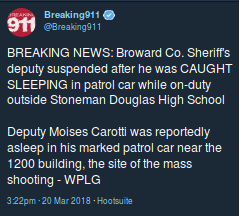
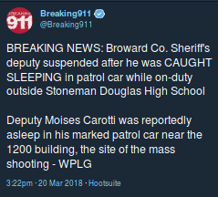


 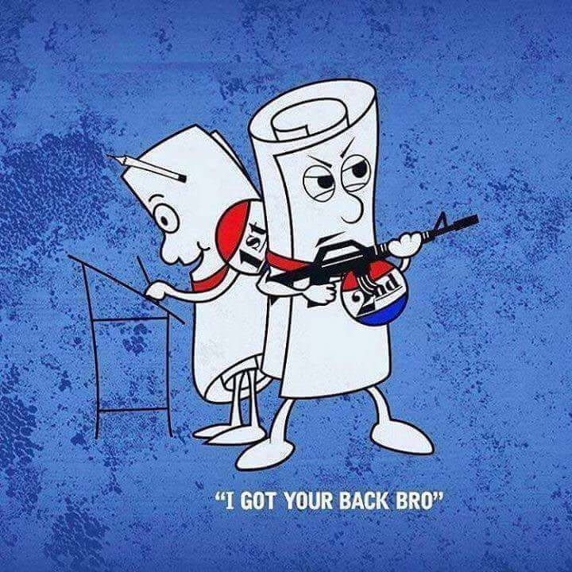
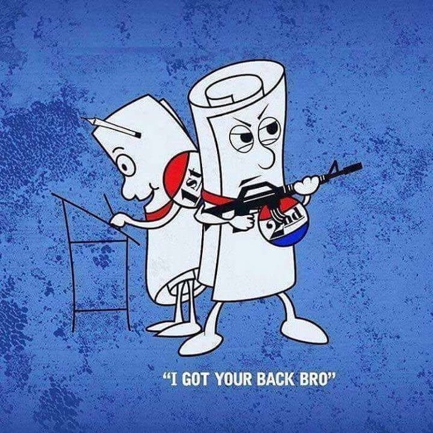


 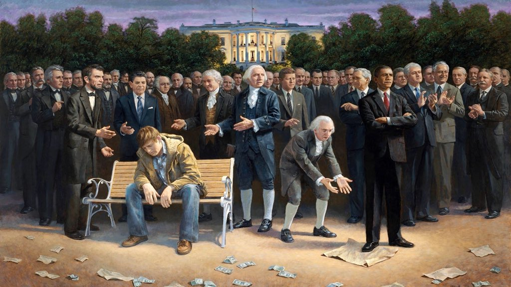
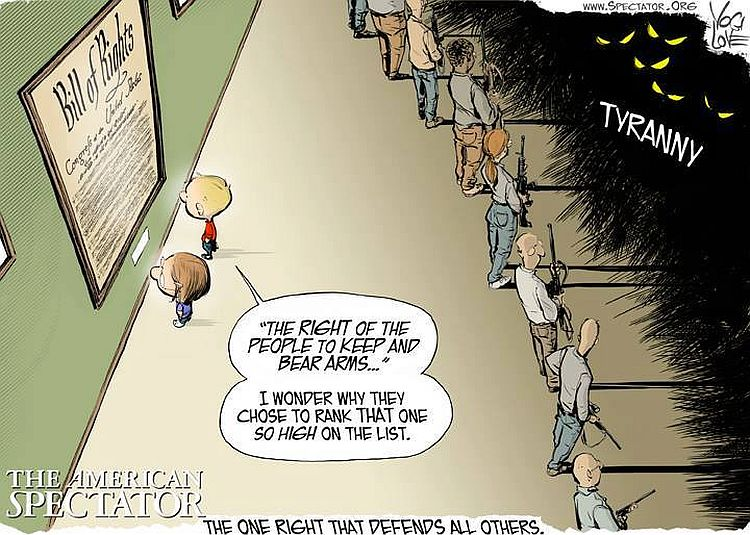
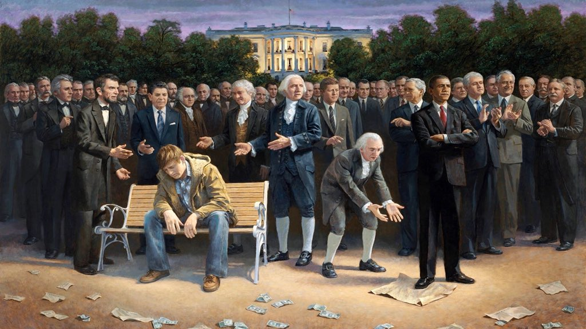
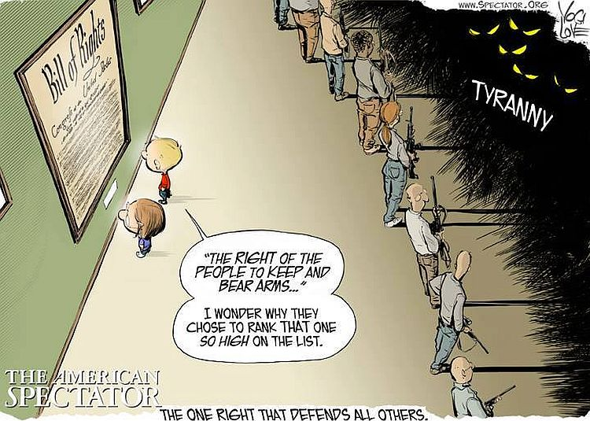
 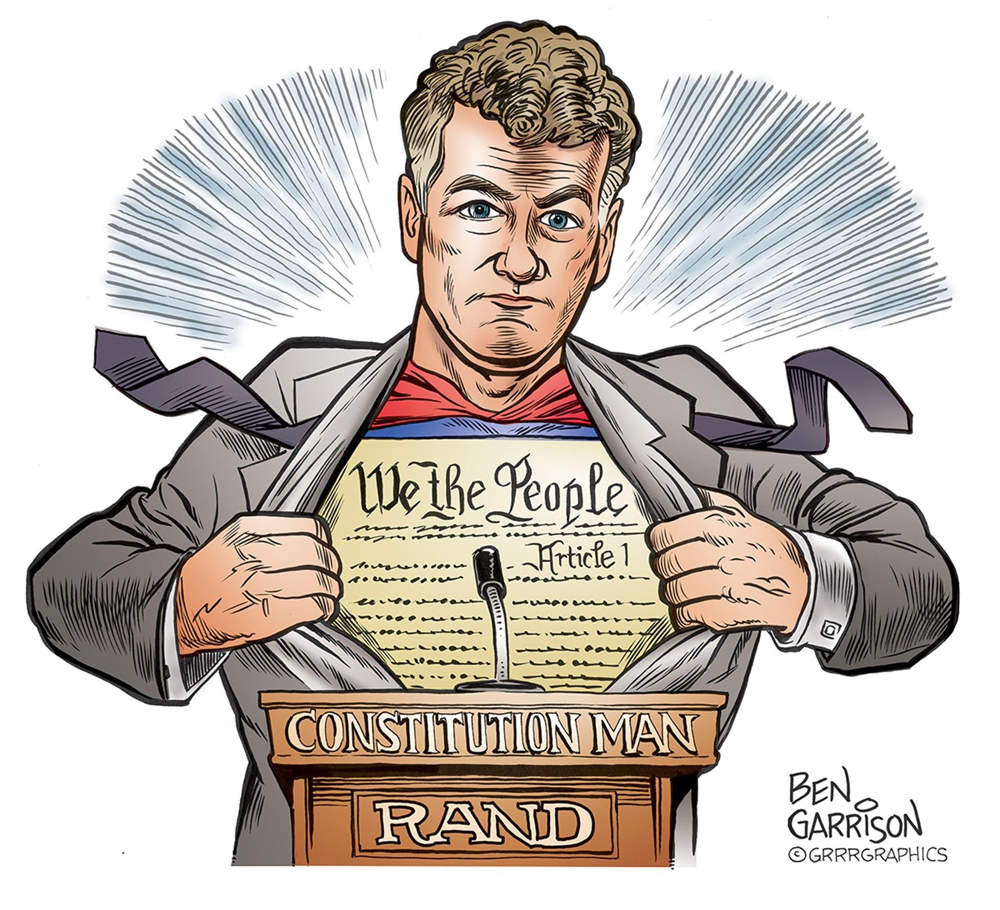
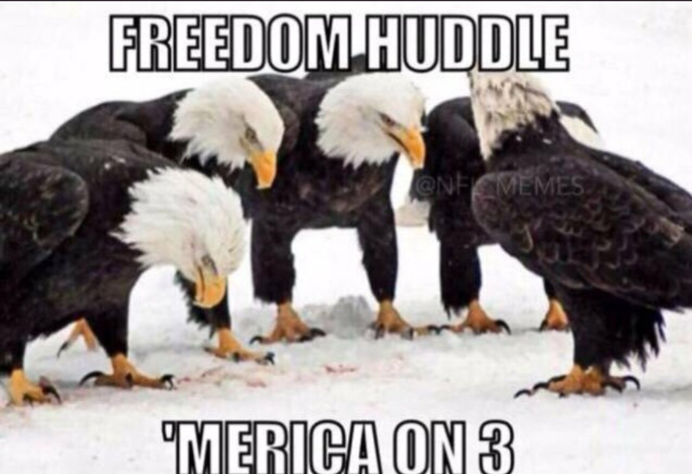
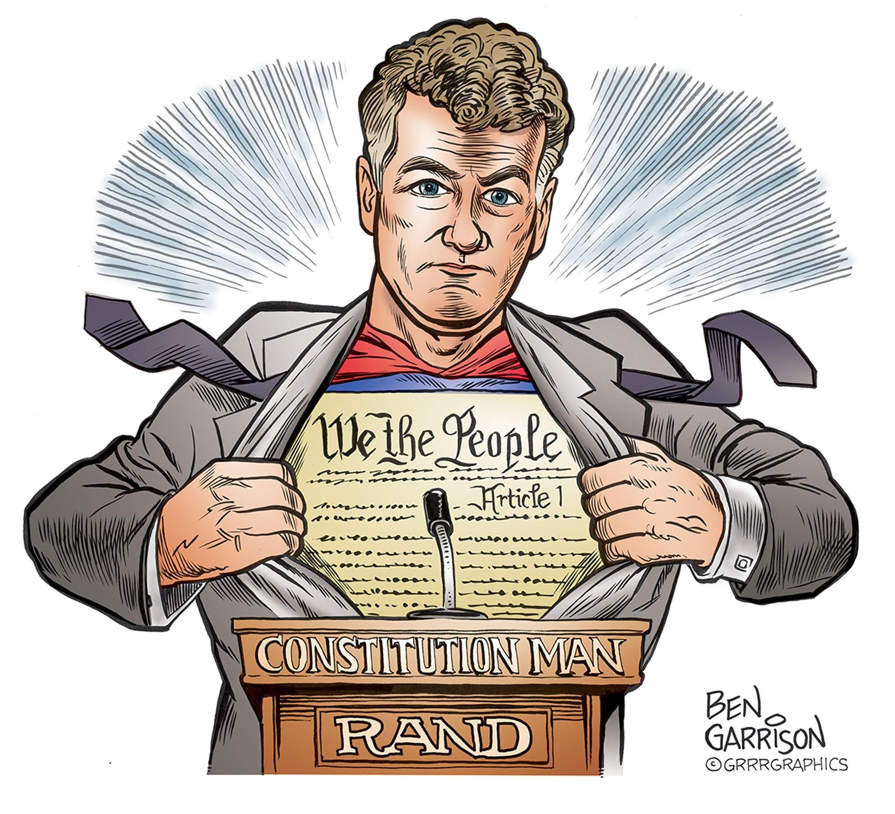
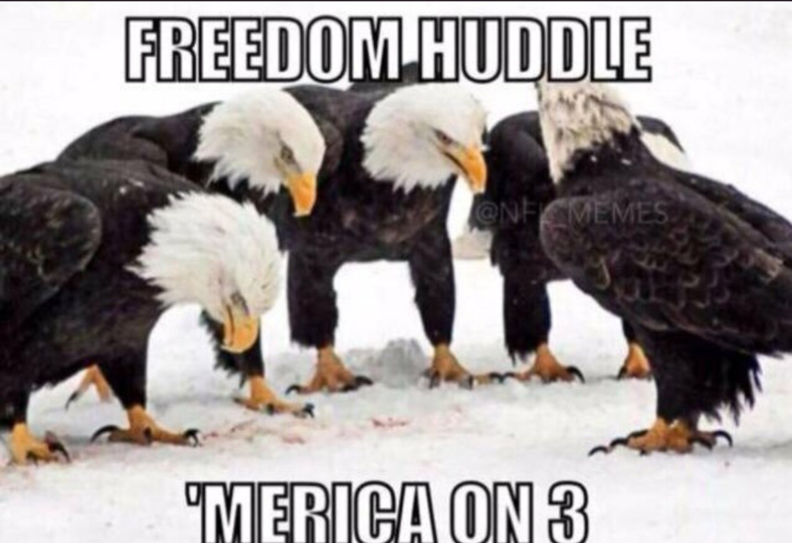


 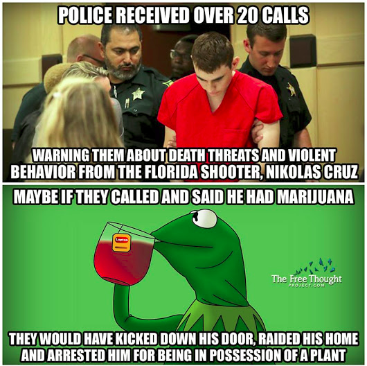
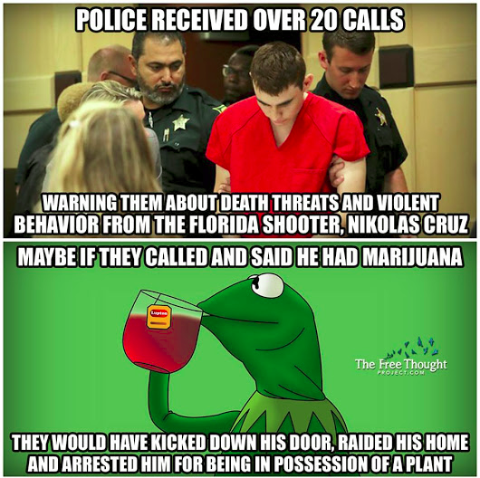


 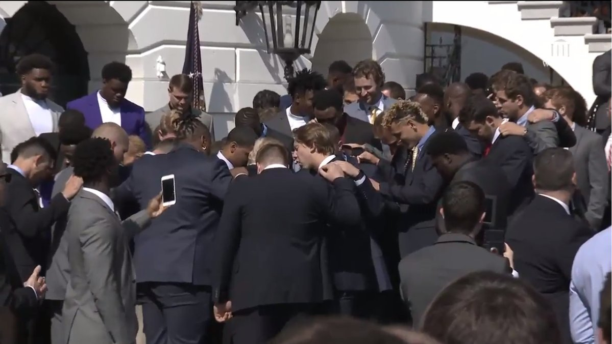
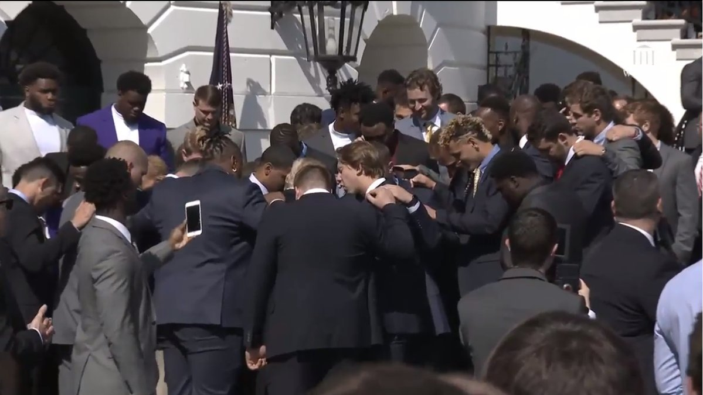

 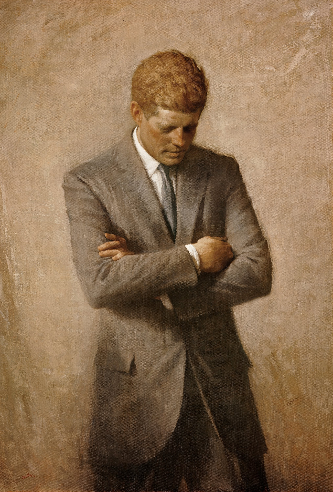
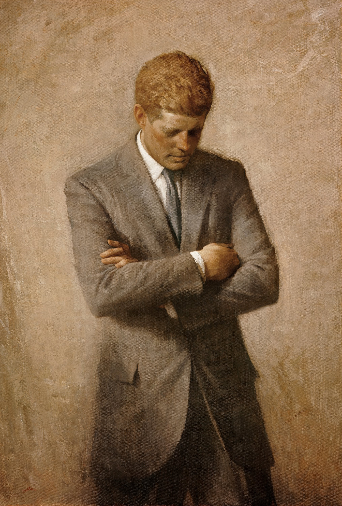


 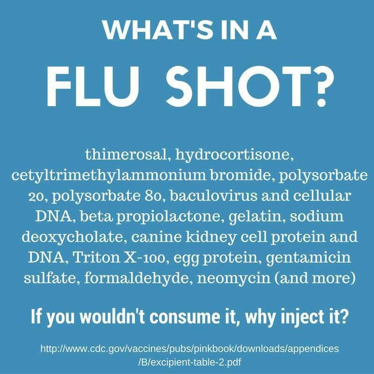
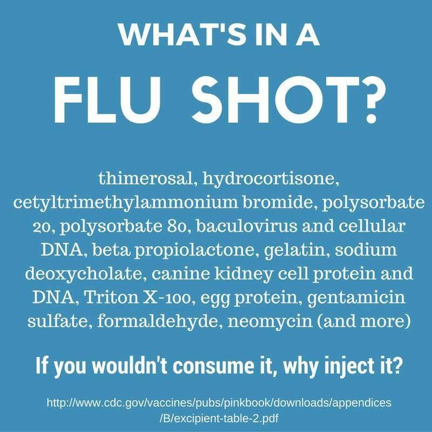